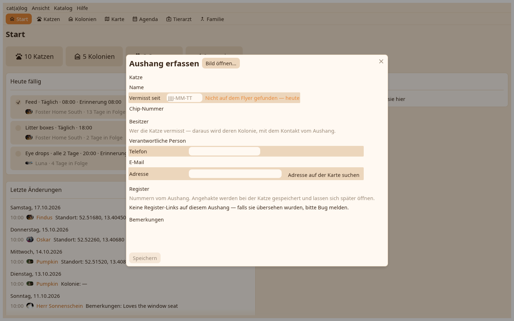

Ein auf dem Telefon fotografierter und gespeicherter Aushang wird am Schreibtisch eine vermisste Katze: Aushang erfassen im Katalog-Menü oder in der Katzenansicht liest das Bild.

Die Zeilen, die die Erkennung las, jede mit dem Feld, in das sie geht; die Vorlage eines Registers ordnet sie zu, wo sie das Layout kennt. Name und Aussehen der Katze, der Kontakt des Besitzers als Kolonie mit dem Status Besitzer, der Vermisst-seit-Tag, und Speichern.
Der Ort des Aushangs ist eine Aushang-Position, ein Pin auf der Karte. Aushang hängt hier aus dem Aktionsmenü einer Seite trägt einen weiteren ein, mit der auf der Karte gewählten Position; ein Rechtsklick auf einen Aushang-Pin nimmt ihn ab.